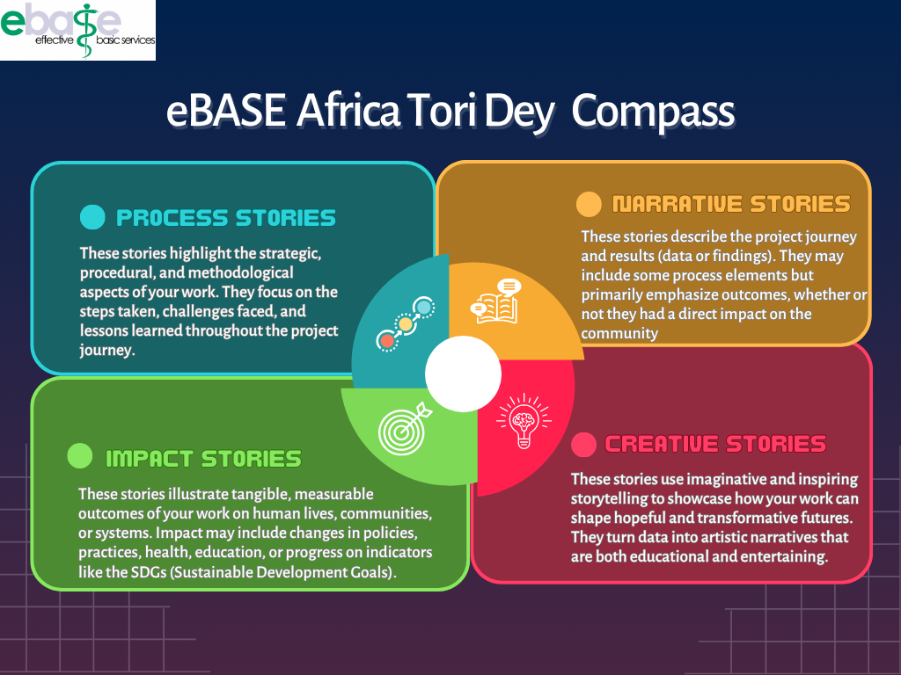

Outil de Prise de Décision Tori Dey

English
|
Français
Adresse e-mail
Institution/Affiliation
Pays
Quel est votre public principal ?
Décideurs politiques
Praticiens
Citoyens
Chercheurs
Bailleurs de fonds/Agences de développement
Y a-t-il d'autres groupes ou parties prenantes que vous souhaitez atteindre ?
De quoi voulez-vous que l’histoire parle ?
L’approche et la méthodologie utilisées / notre manière de travailler
La manière dont nous avons travaillé et les résultats
L’impact de notre travail sur la vie des gens
Comment les données scientifiques peuvent inspirer la créativité artistique
Quel message souhaitez-vous transmettre ?
Y a-t-il un autre message que vous souhaitez transmettre ?
Pourquoi voulez-vous raconter cette histoire ?
Y a-t-il d'autres raisons pour lesquelles vous voulez raconter cette histoire ?
Comment voulez-vous raconter cette histoire ?
Quand voulez-vous raconter cette histoire ?
Où voulez-vous raconter cette histoire ?
Soumettre